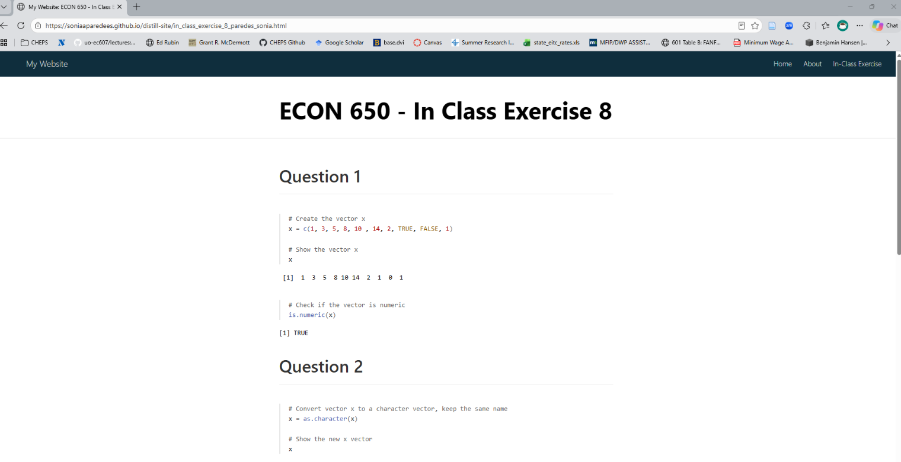

ECON 650: Statistical Tools for Economics San Diego State University, Fall 2026
Sonia Paredes
2026-11-16
What is distill?
distill is an RStudio package and a web publishing format optimized for scientific and technical communication (Allaire et al. 2018).
It is part of the R Markdown ecosystem for creating computational documents in R (Allaire et al. 2018).
What can distill do?
Reader-friendly typography for mobile devices
LaTeX math, citations, and footnotes
Flexible figure layouts and polished tables
Support for diagrams, JavaScript, and interactive visualizations
Tools for publishing articles and websites
Why use distill?
Keep authoring, analysis, and publishing in RStudio.
Turn an existing R Markdown project into a website with relatively little extra work.
Reduce the friction of documenting and presenting a data project.
There are many other packages and tools to create websites using R Markdown within RStudio, I just found distill to be fairly straightforward.
Example: From class exercise to webpage
An in-class R Markdown exercise can become a shareable webpage.

Why make a personal website?
A personal website is essentially a digital calling card.
Showcase your work and interests
Share projects with potential employers or academic colleagues
Build a small, useful portfolio project
How do websites work?
Front end = user-side: what visitors see and interact with, such as HTML and CSS (GeeksforGeeks 2025a).
Back end = server-side: how a site stores and transfers data, including server requests, queries, and database connections (GeeksforGeeks 2025a).
Static or dynamic?
Static website: displays prebuilt content from rendered source code without server-side content processing. It can respond to user actions, but the underlying content cannot be updated in real time (GeeksforGeeks 2025b).
Dynamic website: uses server-side processing and can update site information through a database connection (GeeksforGeeks 2025b).
Static sites are a straightforward, low-cost way to publish information. Hosting options include GitHub Pages, Netlify, and Cloudflare Pages.
Limitations arise when a static webpage contains large amounts of data or requires frequent real-time updates.
Today’s setup
Authoring: RStudio
Website format: Distill
Hosting: GitHub Pages
GitHub Pages availability for private repositories depends on the GitHub plan and account. Public repositories are a common free option.